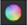
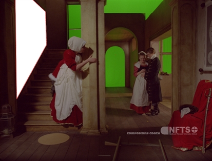
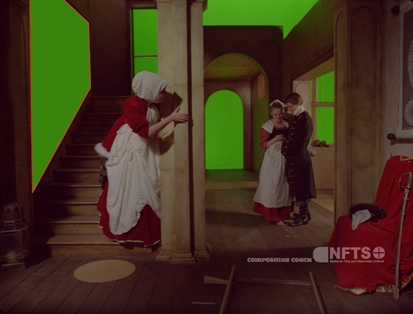
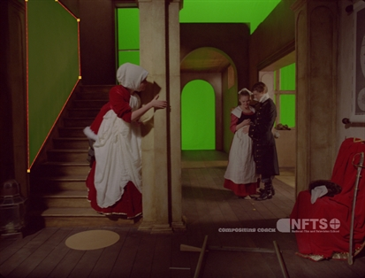
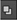

RotoPaint 属性面板中的许多控件都适用于笔画和形状。这些控件分组在 RotoPaint 标签。
当画一笔画/形状，你可以设置的 RGBA 颜色值的行程/造型使用 颜色 上的控件 RotoPaint RotoPaint 属性面板的选项卡 (有关颜色控件的更多信息，请参见 使用合成环境 章)。您还可以调整颜色，直接在行程/造型榜单  控制在 颜色 列。
|
 |
 |
|
颜色 设置为白色 (默认)。 |
颜色 设置为绿色。 |
您可以设置透明度的行程/造型使用 不透明 滑块。如果将形状的不透明度设置为零，则除非选择该形状，否则不会绘制该形状的轮廓。你也可以暂时把行程/造型隐形 (即完全透明) 通过切换 可见 盒子 在笔触/形状列表中。
|
 |
|
|
一个低 不透明 价值。 |
一个高 不透明 价值。 |
提示: 绘制笔触时，可以将其透明度与笔压力联系起来。只需检查 不透明 旁边的框 压力改变 在 中风 属性面板的选项卡。
您可以为笔触/形状选择一个源，并定义它是颜色、背景还是前景图像。选择您的笔画/形状后，从 源 下拉列表 RotoPaint , 形状 ,或 中风 标签。
通过选择不同的混合模式, 混合模式 下拉菜单在 “属性” 面板中，您可以选择笔触/形状中的颜色如何与基础图像混合。您也可以将混合模式给你招，形状，或团体直接冲/造型榜单 混合模式 列  .
每种混合模式都混合了主色，即您正在编辑的当前笔画/形状/组的颜色, 这是背景图像和任何以前渲染的笔画/形状/组的组合颜色。
不同的模式如下:
• 颜色烧伤 -通过增加对比度使原色变暗，以反映次要颜色。图像的任何部分都不会变亮。
• 彩色道奇 -通过降低对比度来照亮原色以反映次要颜色。图像的任何部分都没有变暗。
• 差异 -从原色中减去次要颜色，反之亦然，这取决于哪个颜色更亮。与白色混合反转原色，而与黑色混合不会产生任何变化。类似的颜色返回黑色像素。使用遮罩时，差异是一种有用的模式。
• 排除 -创建类似于差异模式但对比较低的结果。像 Difference 一样，与白色混合反转原色。与黑色混合不会产生任何变化。
• 从 -从辅助颜色中减去原色。
• 硬光 -减轻高光和变暗的阴影。如果第二种颜色比 50% 的灰色浅，结果就会变亮，就像被筛选一样。如果第二种颜色比 50% 的灰色更暗，结果就会变暗，就像它被乘以一样。
• 最大 -选择两种颜色中的浅色作为结果颜色。只替换比次颜色深的区域，而比次颜色浅的区域不会更改。
• Min -选择两种颜色中较暗的颜色作为结果颜色。任何比次要颜色更轻的部分都被替换。图像的任何部分比次要颜色暗的都不会改变。
• 减去 -从原色中减去次要颜色。
• 乘 -将主颜色乘以次颜色。结果总是更暗。与黑色混合会产生黑色，与白色混合会返回不变的颜色。
• 结束 -此模式是默认模式。这两个图像的颜色不会以任何方式相互作用, 核武器 显示主图像中颜色的全部值。
• 覆盖 -根据原色，将颜色相乘或屏幕。辅助颜色使原色变亮，同时保留高光和阴影。
• 加 -两种颜色的总和。增加亮度以使原色变亮并反映辅助颜色。Plus 类似于屏幕混合模式，但会产生更极端的结果。
• 屏幕 -这是一个柔软的加号，让一切变得更亮，但却远离了白人。浅色比深色有更多的效果。结果总是颜色变浅。与黑色混合会使像素保持不变，与白色混合总是返回白色。其结果类似于将多个幻灯片相互突出。
• 柔和的光线 -根据原色，使颜色变暗或变亮。不如硬光模式极端。
提示: 请注意，更改主颜色和次颜色的堆栈顺序可能会对结果产生影响。例如，如果两个 Bezier 形状相互重叠，并且混合模式处于活动状态，则结果取决于哪个形状位于另一个形状之上。您可以更改笔划/形状列表中笔划/形状的堆栈顺序。
|
|